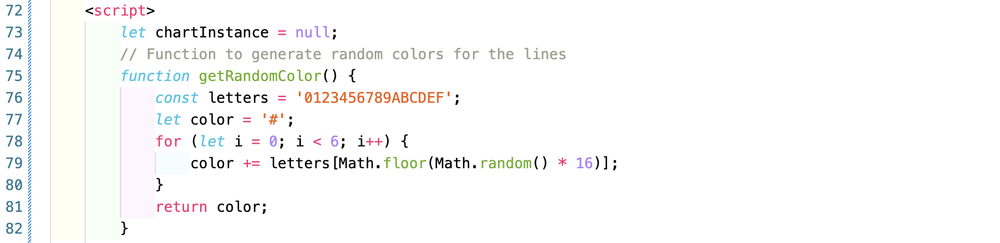
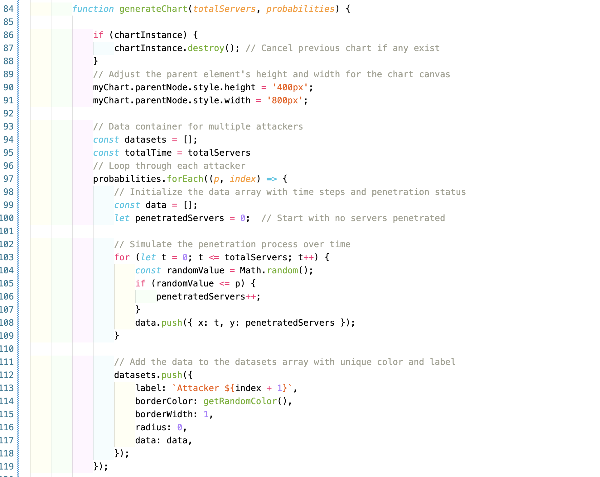

What is it?
Population is the complete set of individuals, whether that group comprises a nation or a group of people with a common characteristic. In statistics we use it to define the set (a statistically significant portion) from which a random sample will be taken. Therefore, in this case, the definition of population becomes "a set of similar items or events which is of interest for some question or experiment".
How do we measure it?
Taking data of the whole population is infeasible as it would require surveys, measurements, observation, or other methods that would increase exponentially the costs of the experiment due to the large number of the population itself. Therefore as said before a sample of that population is taken that is thought to be representative enough to gain data and to be less biased as possible.
Population mean
A population mean is simply the average of whatever population sample you have chosen beforehand and it is a measure of the central tendency either of a probability distribution or of a random variable characterized by that distribution
In statistics, a unit refers to a single member of a group of entities being studied. It serves as the foundation for developing the concept of a “random variable.” Examples of units include an individual person, animal, plant, manufactured product, or country, all of which are part of a larger group under investigation.
Units can be classified as either experimental units or sampling units:
❶ An experimental unit is one member of a set of objects that are initially identical, with each object then subjected to one of several treatments in an experiment. In simple terms, it is the smallest entity that receives the experimental treatment.
❷ A sampling unit (or unit of observation) is an object selected from a statistical population, commonly used in survey sampling and opinion polls.
In statistics and probability, a distribution describes how values of a random variable are spread across a range of possible outcomes. It provides insight into the likelihood of different outcomes, helping to summarize data and guide predictions.
Distributions can be broadly categorized into probability distributions and frequency distributions. A probability distribution defines the likelihood of various outcomes for a random variable. Discrete distributions, like the binomial or Poisson distributions, apply to variables that take specific values, while continuous distributions, such as the normal or exponential distributions, apply to variables that can take any value within a range. A frequency distribution, on the other hand, represents how often certain values appear in a dataset.
Key characteristics of a distribution include the mean (the central tendency), variance (a measure of how data is spread), standard deviation (the average distance from the mean), skewness (indicating asymmetry), and kurtosis (measuring the presence of outliers).
Some common distributions include the normal distribution, which is symmetrical and bell-shaped, and the binomial distribution, which models outcomes in a fixed number of trials with two possible results. The Poisson distribution deals with the occurrence of events over a fixed interval, while the uniform distribution assumes all outcomes are equally likely within a given range.
The notion of average in mathematics refers to the central value or typical representation of a set of numbers.
The arithmetic mean is what most people refer to as the average. It is calculated by adding all the values in a dataset and dividing the sum by the number of values. This is useful for data that is evenly distributed but can be skewed by extreme values (outliers).
Example: For the numbers 2, 4, and 6, the mean is (2 + 4 + 6) / 3 = 4.
The median is the middle value in a dataset when the numbers are arranged in ascending or descending order. If the dataset has an odd number of values, the median is the exact middle value. If it has an even number, the median is the average of the two middle values. The median is not affected by extreme values, making it useful for skewed distributions.
Example: In the set 1, 3, 7, the median is 3. In the set 1, 3, 7, 9, the median is (3 + 7) / 2 = 5.
The mode is the most frequently occurring value in a dataset. A dataset can have more than one mode if multiple values appear with the same frequency (multimodal), or no mode if all values are different. Mode is often used for categorical data.
Example: In the set 1, 2, 2, 3, the mode is 2.
Averages are used extensively in data analysis and statistics to represent overall trends, but calculating them, especially on computers, can introduce challenges due to floating-point representation.
Floating-point representation is a way computers handle real numbers. Because computers have limited precision, not all decimal numbers can be represented exactly, leading to rounding errors. These small inaccuracies can accumulate, especially when performing many arithmetic operations, like summing a large dataset.
One significant issue related to floating-point calculations is catastrophic cancellation. This happens when subtracting two nearly equal numbers, resulting in a loss of significant digits and introducing large relative errors. For instance, if two large numbers are close in value, subtracting them can yield a very small result, but the precision loss can distort the outcome.
Numerical methods are developed to minimize these errors. Donald Knuth, a pioneer in computer science, contributed extensively to addressing computational problems like these. His work in numerical analysis emphasizes careful algorithm design to reduce the effects of rounding and catastrophic cancellation. Some solutions include rearranging arithmetic operations to avoid subtracting similar numbers or using higher-precision formats when necessary.
We are simulating a scenario with n servers and m attackers, where each hacker has a probability p of successfully penetrating any given server. The goal is to visually represent this process: if a hacker fails to penetrate a server, the line remains flat, while a successful breach will cause a jump to 1 on the graph. By experimenting with different values of n, m and p we can observe how often the hacker reaches different levels of penetration over time.
Click on "Simulate" after having filled the necessary fields.
The main part of the program is as follows:
The code snippet initializes a global variable chartInstance to null, indicating that no chart exists when the script is first loaded. This variable is intended to store a reference to the Chart.js object, enabling manipulation, such as destruction, when creating a new chart. Additionally, it defines a function named getRandomColor() that generates a random color in hexadecimal format. This function works by starting with an empty string that begins with #, representing a hex color code. It loops six times, each time appending a random character from the hexadecimal character set 0123456789ABCDEF to the string. Each character is selected by generating a random number between 0 and 15 and using this number to index into the letters string. The result is a complete hex color string, such as #A1B2C3, which can be used to color various elements in the chart, ensuring that each line has a unique and random color.
This is second part:
The generateChart function creates a chart that visualizes the penetration process of multiple attackers over time. It begins by checking if a previous chart instance exists and destroys it to clear the canvas for a new chart. The dimensions of the chart are set, providing a specified height and width. The function initializes a container to hold the datasets for each attacker, then iterates through an array of penetration probabilities for each attacker. For each attacker, it creates a data array that simulates the number of penetrated servers over a series of time steps. During this simulation, a random value is generated, and if it falls below the attacker's probability, the count of penetrated servers is incremented. The resulting data is then added to the datasets array, complete with a unique color and label for each attacker, preparing the information for display in the chart.